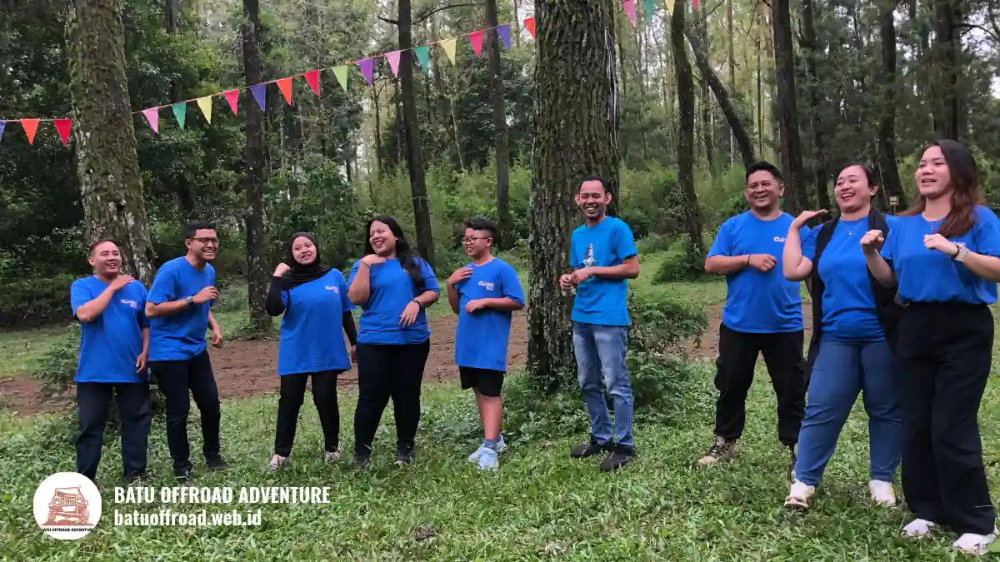

Paket Outbound Team Building Coban Putri Batu Plus Offroad Land Rover 2026
Paket outbound team building Coban Putri Batu menggabungkan permainan tim di alam terbuka dengan offroad Land Rover, cocok untuk gathering kantor, sekolah, dan komunitas.
Paket ini memadukan sesi outbound atau fun games dengan jelajah jeep dan Land Rover di kawasan Coban Putri, Kota Batu, Jawa Timur.
- Batu Offroad Adventure mensyaratkan peserta minimal 10 orang dan menyarankan pemesanan 1-2 minggu sebelum tanggal kegiatan.
- Fasilitas basecamp mencakup parkir bus, toilet, musholla, kantin, dan pendopo permanen untuk berteduh.
- Pilih paket berdasarkan tujuan acara, jumlah peserta, kondisi fisik, durasi, dan standar keselamatan operator.
Apa itu paket outbound team building Coban Putri Batu?
Paket outbound team building Coban Putri Batu adalah rangkaian kegiatan kelompok berisi permainan kerja sama, instruktur, dan perjalanan offroad Land Rover di alam terbuka.
Coban Putri berada di Kota Batu, Jawa Timur, dekat kawasan Jatim Park 2. Kawasan ini sering dipilih rombongan karena akses dari Malang dan Surabaya relatif mudah dan area kegiatannya cukup luas untuk kelompok besar.
Batu Offroad Adventure menyediakan paket offroad dan team building yang memuat armada jeep 4x4, driver dan instruktur, sesi team building, peralatan outbound, serta tiket rute offroad. Peserta tidak perlu membawa peralatan sendiri, meskipun perlengkapan pribadi tetap boleh dibawa.
Paket ini ditujukan bagi kantor yang menyelenggarakan gathering, sekolah dan kampus yang menggelar kegiatan angkatan, komunitas, serta keluarga besar. Paket ini umumnya dipakai ketika sebuah kelompok ingin kebersamaan yang aktif, bukan sekadar makan bersama di ruang pertemuan.
Ada batasan yang perlu dipahami. Offroad dan outbound melibatkan aktivitas fisik ringan sampai sedang, sehingga peserta dengan kondisi kesehatan tertentu perlu berkonsultasi dengan operator sebelum mendaftar. Jalur alam juga dapat berubah mengikuti cuaca.
Mengapa team building di alam terbuka efektif untuk tim kantor?
Team building di alam terbuka efektif karena peserta keluar dari rutinitas, bekerja sama menyelesaikan tantangan fisik ringan, dan berinteraksi lintas jabatan secara lebih santai.
Kebutuhan akan kegiatan bersama ini nyata. Menurut laporan State of the Global Workplace edisi 2025 dari Gallup, keterlibatan karyawan global turun menjadi 21% pada 2024. Angka ini menunjukkan bahwa banyak organisasi perlu menciptakan pengalaman bersama yang membangun rasa memiliki terhadap tim.
Kegiatan outdoor bekerja karena situasinya berbeda dari kantor. Atasan dan staf berada di jeep yang sama, menyelesaikan permainan yang sama, dan tertawa pada hal yang sama. Hierarki mencair, dan komunikasi biasanya lebih terbuka setelahnya.
Dari sisi pengalaman lapangan, Batu Offroad mencantumkan lebih dari 180 event yang telah ditangani dan setidaknya 3 rute offroad di situs resminya (batuoffroad.web.id, data 2026).
Angka ini bersumber dari klaim operator, jadi calon pemesan tetap sebaiknya menanyakan langsung pengalaman tim untuk jenis kelompok yang serupa dengan rombongannya.
Manfaat yang paling sering dicari panitia antara lain:
- komunikasi antaranggota tim yang lebih lancar,
- rasa percaya yang tumbuh melalui tantangan bersama,
- kenal lebih dekat antardivisi,
- suasana segar yang membantu tim kembali bekerja dengan energi baru.
Efeknya tidak instan dan tidak dijamin. Hasil terbaik muncul bila acara punya tujuan jelas, dan sesi evaluasi dipakai untuk mengaitkan pengalaman dengan pekerjaan sehari-hari.
Apa saja isi paket outbound dan offroad Land Rover di Coban Putri?
Paket outbound dan offroad Coban Putri umumnya mencakup armada jeep, driver, instruktur, sesi permainan tim, peralatan outbound, dan tiket rute offroad dari operator.
Di situs Batu Offroad Adventure, beberapa paket tersedia untuk dipilih sesuai kebutuhan kelompok:
- Offroad + Fun Games: armada jeep 4x4, driver dan guide, sesi fun games, peralatan games, dan tiket rute offroad.
- Offroad + Team Building: armada jeep 4x4, driver dan instruktur, sesi team building, peralatan outbound, dan tiket rute offroad.
- Offroad + Outbound + Paintball: sesi outbound lengkap, permainan paintball, peralatan standar keamanan, dan instruktur berpengalaman.
- Paket tambahan: seperti rafting atau ATV bagi kelompok yang ingin variasi.
Untuk kawasan Coban Putri, operator menawarkan jelajah dengan Land Rover yang dapat dikombinasikan dengan sesi team building. Detail kegiatan, rute, dan ketersediaan armada sebaiknya dikonfirmasi saat pemesanan, karena dapat bervariasi tergantung jadwal dan jumlah peserta. Rincian awal juga bisa dibaca pada halaman offroad Coban Putri Batu dengan Land Rover dan shuttle.
Konfirmasikan juga apakah makan, dokumentasi, atau layanan shuttle masuk dalam paket yang dipilih. Item tambahan ini berbeda antarpaket, sehingga tidak boleh diasumsikan sama.
Bagaimana alur kegiatan dari datang sampai pulang?
Alur paket outbound dan offroad di Coban Putri umumnya dimulai dari kedatangan di basecamp, briefing keselamatan, sesi permainan, jelajah jeep, istirahat, lalu evaluasi.
Berikut gambaran umum urutannya. Waktu dan susunan dapat disesuaikan dengan paket dan kebutuhan kelompok.
- Kedatangan, registrasi, dan pembagian kelompok di basecamp.
- Briefing keselamatan dari guide mengenai cara duduk, berpegangan, dan aturan selama di jalur.
- Sesi outbound atau fun games yang dipandu instruktur.
- Jelajah jeep atau Land Rover melewati jalur alam dan titik singgah.
- Istirahat, makan, dan sesi foto bersama.
- Evaluasi singkat dan penutup.
Beberapa kelompok memilih offroad di awal untuk memecah suasana, lalu menutup dengan permainan tim. Kelompok lain memilih sebaliknya. Dua urutan tersebut sama-sama lazim, dan pilihan terbaik bergantung pada tujuan acara dan cuaca pada hari itu.
Batu Offroad juga menyediakan panduan durasi ideal offroad di Batu yang berguna untuk menyesuaikan jadwal dengan pilihan rute pendek, menengah, atau panjang.

Peserta outbound team building bermain game kelompok di Coban Putri Batu.
Fasilitas apa saja yang tersedia untuk rombongan di area Batu Offroad?
Area Batu Offroad menyediakan parkir luas untuk bus dan mobil pribadi, toilet terpisah, musholla, kantin atau cafe, pendopo, dan titik listrik di area komunal.
Fasilitas ini penting bagi panitia karena rombongan besar membutuhkan tempat berkumpul yang nyaman. Berikut rinciannya menurut informasi di situs operator:
- Parkir: area luas untuk bus dan mobil pribadi.
- Toilet: bersih dan terpisah.
- Musholla: berkapasitas sekitar 8-10 orang, sehingga ibadah perlu bergiliran untuk rombongan besar.
- Kantin atau cafe: tersedia makanan berat dan ringan.
- Pendopo permanen: tempat berteduh ketika hujan turun menunggu cuaca mendukung.
- Titik listrik: untuk mengisi daya ponsel dan kamera di area komunal.
Akses menuju basecamp berupa jalan aspal dan makadam yang diperkeras, sehingga menurut operator dapat dilalui motor, mobil keluarga, dan kendaraan rombongan hingga area parkir. Uraian lengkapnya tersedia pada daftar fasilitas Coban Putri untuk rombongan.
Faktor apa yang perlu dipertimbangkan sebelum memilih paket?
Pertimbangkan jumlah peserta, tujuan acara, durasi, kondisi fisik peserta, cuaca, dan standar keselamatan operator sebelum memilih paket outbound dan offroad untuk rombongan.
Berikut penjelasan tiap faktor:
- Jumlah peserta: Batu Offroad mensyaratkan minimal 10 orang per paket. Jumlah peserta mempengaruhi kebutuhan armada, instruktur, dan pembagian kelompok.
- Tujuan acara: Jika tujuan utamanya kekompakan, pilih paket dengan sesi team building yang dipandu instruktur. Jika tujuan utamanya hiburan dan apresiasi, paket fun games sudah cukup.
- Durasi: Rute pendek lebih ramah bagi peserta yang belum biasa, sedangkan rute panjang cocok untuk kelompok yang ingin petualangan penuh.
- Kondisi peserta: Sampaikan jika ada lansia, ibu hamil, anak kecil, atau peserta dengan kondisi kesehatan khusus. Operator dapat menyarankan opsi yang lebih nyaman.
- Cuaca: Musim hujan dapat membuat jalur licin. Tanyakan kebijakan jadwal ulang sebelum memesan.
- Keselamatan: Tanyakan peran driver dan guide, pengecekan armada sebelum berangkat, serta aturan duduk di jeep. Pembahasan lebih rinci ada pada standar keselamatan offroad di Batu.
Mana yang lebih cocok: outbound saja, offroad saja, atau gabungan?
Gabungan outbound dan offroad cocok untuk tujuan kerja sama sekaligus rekreasi, outbound saja lebih fokus melatih tim, dan offroad saja lebih menekankan hiburan.
| Pilihan | Fokus utama | Cocok untuk | Batasan |
|---|---|---|---|
| Outbound saja | Kerja sama, komunikasi, kepercayaan | Tim yang butuh pelatihan kebersamaan terarah | Kurang sensasi petualangan |
| Offroad saja | Hiburan dan petualangan | Kelompok yang ingin santai dan seru | Interaksi tim tidak terstruktur |
| Gabungan | Kerja sama dan rekreasi sekaligus | Gathering kantor, sekolah, komunitas | Jadwal perlu disusun agar tidak terlalu padat |
Untuk sebagian besar gathering kantor, gabungan menjadi pilihan yang praktis karena satu operator mengurus kegiatan, armada, dan fasilitas sekaligus. Meski begitu, kelompok kecil dengan waktu terbatas bisa saja memilih satu jenis kegiatan saja.
Apa kesalahan umum saat menyusun acara outbound dan offroad?
Kesalahan umum acara outbound dan offroad meliputi memesan terlalu mepet, tidak menyesuaikan kegiatan dengan kondisi peserta, mengabaikan cuaca, dan membuat jadwal terlalu padat.
Kesalahan-kesalahan ini sebenarnya mudah dicegah:
- Memesan terlalu mepet: Operator menyarankan reservasi 1-2 minggu sebelumnya, terutama untuk akhir pekan dan hari libur nasional.
- Tidak menanyakan isi paket: Peserta baru tahu di lokasi bahwa makan atau dokumentasi ternyata tidak termasuk.
- Mengabaikan kondisi peserta: Semua peserta dianggap mampu mengikuti kegiatan fisik yang sama.
- Jadwal terlalu padat: Tidak ada waktu istirahat, ibadah, dan makan.
- Tanpa sesi evaluasi: Pengalaman seru berlalu begitu saja tanpa dikaitkan dengan tujuan tim.
- Lalai pada pakaian dan alas kaki: Jalur alam bisa berdebu atau berlumpur, sehingga alas kaki antiselip dan baju ganti sangat membantu.
Bagaimana tips agar gathering outbound dan offroad berjalan lancar?
Agar gathering outbound dan offroad lancar, tentukan tujuan acara, kirim tanggal dan jumlah peserta lebih awal, patuhi arahan guide, dan sisakan waktu evaluasi bersama.
Beberapa tips praktis dari sisi panitia:
- Tetapkan satu tujuan utama: Misalnya mempererat divisi baru atau apresiasi akhir tahun, lalu pilih permainan yang selaras.
- Bagi kelompok secara campuran: Satukan peserta lintas divisi agar interaksi baru terbentuk.
- Briefing peserta sebelum hari H: Sampaikan jadwal, titik kumpul, pakaian, dan barang bawaan.
- Siapkan rencana cadangan hujan: Tanyakan area berteduh dan opsi jadwal ulang.
- Tunjuk satu koordinator: Satu orang menjadi penghubung ke tim operator agar komunikasi tidak terpecah.
- Tutup dengan evaluasi: Beri 10-15 menit untuk setiap kelompok berbagi apa yang dipelajari.
Panitia yang baru pertama menyelenggarakan acara serupa dapat memakai kerangka dari wisata dekat Coban Putri untuk menambah destinasi pelengkap setelah kegiatan utama selesai.
Kesimpulan
Paket outbound team building Coban Putri Batu memberi satu paket lengkap untuk rombongan yang ingin kebersamaan aktif: permainan tim yang dipandu instruktur, offroad Land Rover di jalur alam, dan fasilitas basecamp yang siap menampung kelompok besar.
Alasan offroad di Batu Malang cocok untuk rombongan Anda cukup jelas. Udara pegunungan membuat suasana lebih segar, jalur alam menghadirkan pengalaman yang sulit ditiru di ruang pertemuan, dan satu operator mengurus armada, driver, instruktur, serta fasilitas sekaligus. Itu berarti panitia punya lebih sedikit hal untuk dikoordinasikan.
Langkah berikutnya sederhana: tentukan tujuan acara, kumpulkan jumlah peserta dan tanggal yang diinginkan, lalu pilih paket yang paling sesuai. Siap menjadwalkan kegiatan tim Anda? Hubungi Batu Offroad Adventure via WhatsApp +62 812-3398-9707 untuk cek jadwal dan booking sekarang.
FAQ (Pertanyaan yang sering diajukan)
Berikut jawaban singkat atas pertanyaan yang paling sering diajukan rombongan tentang paket outbound team building dan offroad Land Rover di Coban Putri Batu.
-
Berapa minimal peserta untuk paket outbound dan offroad di Batu Offroad?
Batu Offroad menetapkan minimal 10 orang untuk setiap paket. Untuk kelompok yang lebih kecil atau kebutuhan khusus, tanyakan opsi kustom langsung kepada tim operator. -
Apakah peserta harus membawa peralatan sendiri?
Tidak harus. Operator menyediakan armada jeep, driver, dan peralatan keselamatan, serta peralatan outbound untuk paket team building. Peserta tetap boleh membawa perlengkapan pribadi seperti topi, baju ganti, dan jas hujan. -
Berapa lama sebaiknya memesan sebelum tanggal kegiatan?
Operator menyarankan reservasi 1-2 minggu sebelum kedatangan. Akhir pekan dan hari libur nasional biasanya lebih ramai, jadi pesan lebih awal agar jadwal dan armada tersedia. -
Bagaimana jika turun hujan saat kegiatan berlangsung?
Armada jeep dilengkapi atap dan perlindungan memadai, dan basecamp memiliki pendopo permanen untuk berteduh. Keputusan melanjutkan atau menunda tetap mengikuti arahan guide demi keselamatan peserta. -
Apakah bus besar bisa masuk ke area basecamp?
Operator menyebutkan akses berupa jalan aspal dan makadam yang diperkeras serta area parkir luas untuk bus dan mobil pribadi. Konfirmasi ukuran bus dan titik turun penumpang kepada tim sebelum hari kegiatan.